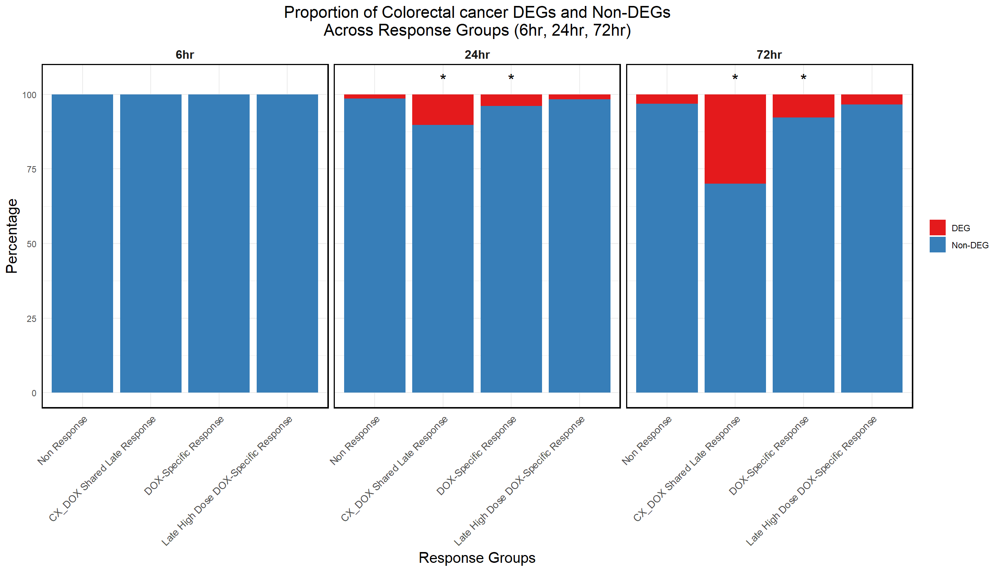

Last updated: 2025-02-28
Checks: 6 1
Knit directory: CX5461_Project/
This reproducible R Markdown analysis was created with workflowr (version 1.7.1). The Checks tab describes the reproducibility checks that were applied when the results were created. The Past versions tab lists the development history.
The R Markdown is untracked by Git. To know which version of the R
Markdown file created these results, you’ll want to first commit it to
the Git repo. If you’re still working on the analysis, you can ignore
this warning. When you’re finished, you can run
wflow_publish to commit the R Markdown file and build the
HTML.
Great job! The global environment was empty. Objects defined in the global environment can affect the analysis in your R Markdown file in unknown ways. For reproduciblity it’s best to always run the code in an empty environment.
The command set.seed(20250129) was run prior to running
the code in the R Markdown file. Setting a seed ensures that any results
that rely on randomness, e.g. subsampling or permutations, are
reproducible.
Great job! Recording the operating system, R version, and package versions is critical for reproducibility.
Nice! There were no cached chunks for this analysis, so you can be confident that you successfully produced the results during this run.
Great job! Using relative paths to the files within your workflowr project makes it easier to run your code on other machines.
Great! You are using Git for version control. Tracking code development and connecting the code version to the results is critical for reproducibility.
The results in this page were generated with repository version cb00774. See the Past versions tab to see a history of the changes made to the R Markdown and HTML files.
Note that you need to be careful to ensure that all relevant files for
the analysis have been committed to Git prior to generating the results
(you can use wflow_publish or
wflow_git_commit). workflowr only checks the R Markdown
file, but you know if there are other scripts or data files that it
depends on. Below is the status of the Git repository when the results
were generated:
Ignored files:
Ignored: .RData
Ignored: .Rhistory
Ignored: .Rproj.user/
Untracked files:
Untracked: analysis/Colorectal.Rmd
Untracked: data/Colorectal/
Unstaged changes:
Modified: analysis/Tissue.Rmd
Note that any generated files, e.g. HTML, png, CSS, etc., are not included in this status report because it is ok for generated content to have uncommitted changes.
There are no past versions. Publish this analysis with
wflow_publish() to start tracking its development.
library(ggplot2)Warning: package 'ggplot2' was built under R version 4.3.3library(dplyr)Warning: package 'dplyr' was built under R version 4.3.2library(tidyr)Warning: package 'tidyr' was built under R version 4.3.3library(org.Hs.eg.db)Warning: package 'AnnotationDbi' was built under R version 4.3.2Warning: package 'BiocGenerics' was built under R version 4.3.1Warning: package 'Biobase' was built under R version 4.3.1Warning: package 'IRanges' was built under R version 4.3.1Warning: package 'S4Vectors' was built under R version 4.3.1library(clusterProfiler)Warning: package 'clusterProfiler' was built under R version 4.3.3library(biomaRt)Warning: package 'biomaRt' was built under R version 4.3.2# Define correct timepoints
timepoints <- c("6hr", "24hr", "72hr")
# Initialize an empty dataframe to store chi-square results
all_chi_results <- data.frame()
# Loop through each timepoint and perform Chi-square test
for (time in timepoints) {
# Load proportion data for the given timepoint
file_path <- paste0("data/Colorectal/Proportion_data_", time, ".csv")
# Check if the file exists before reading
if (!file.exists(file_path)) {
cat("\n🚨 Warning: File does not exist:", file_path, "\nSkipping this timepoint...\n")
next # Skip this iteration if the file is missing
}
proportion_data <- read.csv(file_path)
# Extract counts for Non-Response group
non_response_counts <- proportion_data %>%
filter(Set == "Non Response") %>%
dplyr::select(DEG, `Non.DEG`) %>%
unlist(use.names = FALSE) # Convert to numeric vector
# Debugging: Print Non-Response counts
cat("\nNon-Response Counts for", time, ":\n")
print(non_response_counts)
# Initialize a list to store chi-square test results for this timepoint
chi_results <- list()
# Perform chi-square test for each response group
for (group in unique(proportion_data$Set)) {
if (group == "Non Response") next # Skip Non Response group
# Extract counts for the current response group
group_counts <- proportion_data %>%
filter(Set == group) %>%
dplyr::select(DEG, `Non.DEG`) %>%
unlist(use.names = FALSE) # Convert to numeric vector
# Ensure valid counts for chi-square test
if (length(group_counts) < 2) group_counts <- c(group_counts, 0)
if (length(non_response_counts) < 2) non_response_counts <- c(non_response_counts, 0)
# Create contingency table
contingency_table <- matrix(c(
group_counts[1], group_counts[2], # Current response group counts
non_response_counts[1], non_response_counts[2] # Non-Response counts
), nrow = 2, byrow = TRUE)
# Debugging: Print contingency table
cat("\nProcessing Group:", group, "at", time, "\n")
cat("Contingency Table:\n")
print(contingency_table)
# Perform chi-square test
test_result <- chisq.test(contingency_table)
p_value <- test_result$p.value
significance <- ifelse(p_value < 0.05, "*", "") # Mark * for p < 0.05
# Store results
chi_results[[group]] <- data.frame(
Set = group,
Timepoint = time,
Chi2 = test_result$statistic,
p_value = p_value,
Significance = significance
)
}
# Combine results for this timepoint into a single dataframe
chi_results <- do.call(rbind, chi_results)
# Append to the overall results dataframe
all_chi_results <- rbind(all_chi_results, chi_results)
}
# Save final chi-square results
write.csv(all_chi_results, "data/Colorectal//Chi_Square_Results_All.csv", row.names = FALSE)# Load the saved datasets
prob_all_1 <- read.csv("data/prob_all_1.csv")$Entrez_ID
prob_all_2 <- read.csv("data/prob_all_2.csv")$Entrez_ID
prob_all_3 <- read.csv("data/prob_all_3.csv")$Entrez_ID
prob_all_4 <- read.csv("data/prob_all_4.csv")$Entrez_ID
# Example Response Groups Data (Replace with actual data)
response_groups <- list(
"Non Response" = prob_all_1, # Replace 'prob_all_1', 'prob_all_2', etc. with your actual response group dataframes
"CX_DOX Shared Late Response" = prob_all_2,
"DOX-Specific Response" = prob_all_3,
"Late High Dose DOX-Specific Response" = prob_all_4
)
# Load the proportion data again for visualization
proportion_data <-read.csv("data/Colorectal/Proportion_data.csv")
# Merge chi-square results into proportion data for plotting
proportion_data <- proportion_data %>%
left_join(all_chi_results %>% dplyr::select(Set, Timepoint, Significance), by = c("Set", "Timepoint"))
# Convert to factors for ordered display
proportion_data$Set <- factor(proportion_data$Set, levels = c(
"Non Response",
"CX_DOX Shared Late Response",
"DOX-Specific Response",
"Late High Dose DOX-Specific Response"
))
proportion_data$Timepoint <- factor(proportion_data$Timepoint, levels = timepoints)
# Plot proportions with significance stars
ggplot(proportion_data, aes(x = Set, y = Percentage, fill = Category)) +
geom_bar(stat = "identity", position = "stack") +
facet_wrap(~Timepoint, scales = "fixed") +
scale_fill_manual(values = c("DEG" = "#e41a1c", "Non-DEG" = "#377eb8")) +
geom_text(
data = proportion_data %>% filter(Significance == "*") %>% distinct(Set, Timepoint, Significance),
aes(x = Set, y = 105, label = Significance),
inherit.aes = FALSE,
size = 6,
color = "black",
hjust = 0.5
) +
labs(
title = "Proportion of Colorectal cancer DEGs and Non-DEGs\nAcross Response Groups (6hr, 24hr, 72hr)",
x = "Response Groups",
y = "Percentage",
fill = "Category"
) +
theme_minimal() +
theme(
plot.title = element_text(size = rel(1.5), hjust = 0.5),
axis.title = element_text(size = 15, color = "black"),
axis.text.x = element_text(size = 10, angle = 45, hjust = 1),
legend.title = element_blank(),
panel.border = element_rect(color = "black", fill = NA, size = 1.2),
strip.background = element_blank(),
strip.text = element_text(size = 12, face = "bold")
)Warning: The `size` argument of `element_rect()` is deprecated as of ggplot2 3.4.0.
ℹ Please use the `linewidth` argument instead.
This warning is displayed once every 8 hours.
Call `lifecycle::last_lifecycle_warnings()` to see where this warning was
generated.
sessionInfo()R version 4.3.0 (2023-04-21 ucrt)
Platform: x86_64-w64-mingw32/x64 (64-bit)
Running under: Windows 11 x64 (build 22631)
Matrix products: default
locale:
[1] LC_COLLATE=English_United States.utf8
[2] LC_CTYPE=English_United States.utf8
[3] LC_MONETARY=English_United States.utf8
[4] LC_NUMERIC=C
[5] LC_TIME=English_United States.utf8
time zone: America/Chicago
tzcode source: internal
attached base packages:
[1] stats4 stats graphics grDevices utils datasets methods
[8] base
other attached packages:
[1] biomaRt_2.58.2 clusterProfiler_4.10.1 org.Hs.eg.db_3.18.0
[4] AnnotationDbi_1.64.1 IRanges_2.36.0 S4Vectors_0.40.1
[7] Biobase_2.62.0 BiocGenerics_0.48.1 tidyr_1.3.1
[10] dplyr_1.1.4 ggplot2_3.5.1
loaded via a namespace (and not attached):
[1] RColorBrewer_1.1-3 rstudioapi_0.17.1 jsonlite_1.8.9
[4] magrittr_2.0.3 farver_2.1.2 rmarkdown_2.29
[7] fs_1.6.3 zlibbioc_1.48.0 vctrs_0.6.5
[10] memoise_2.0.1 RCurl_1.98-1.13 ggtree_3.10.1
[13] htmltools_0.5.8.1 progress_1.2.3 curl_6.0.1
[16] gridGraphics_0.5-1 sass_0.4.9 bslib_0.8.0
[19] plyr_1.8.9 cachem_1.0.8 igraph_2.1.1
[22] lifecycle_1.0.4 pkgconfig_2.0.3 Matrix_1.6-1.1
[25] R6_2.5.1 fastmap_1.1.1 gson_0.1.0
[28] GenomeInfoDbData_1.2.11 digest_0.6.34 aplot_0.2.3
[31] enrichplot_1.22.0 colorspace_2.1-0 patchwork_1.3.0
[34] rprojroot_2.0.4 RSQLite_2.3.3 labeling_0.4.3
[37] filelock_1.0.3 httr_1.4.7 polyclip_1.10-7
[40] compiler_4.3.0 bit64_4.0.5 withr_3.0.2
[43] BiocParallel_1.36.0 viridis_0.6.5 DBI_1.2.3
[46] ggforce_0.4.2 MASS_7.3-60 rappdirs_0.3.3
[49] HDO.db_0.99.1 tools_4.3.0 ape_5.8
[52] scatterpie_0.2.4 httpuv_1.6.15 glue_1.7.0
[55] nlme_3.1-166 GOSemSim_2.28.1 promises_1.3.0
[58] grid_4.3.0 shadowtext_0.1.4 reshape2_1.4.4
[61] fgsea_1.28.0 generics_0.1.3 gtable_0.3.6
[64] data.table_1.14.10 hms_1.1.3 xml2_1.3.6
[67] tidygraph_1.3.1 XVector_0.42.0 ggrepel_0.9.6
[70] pillar_1.10.1 stringr_1.5.1 yulab.utils_0.1.8
[73] later_1.3.2 splines_4.3.0 tweenr_2.0.3
[76] BiocFileCache_2.10.2 treeio_1.26.0 lattice_0.22-5
[79] bit_4.0.5 tidyselect_1.2.1 GO.db_3.18.0
[82] Biostrings_2.70.1 knitr_1.49 git2r_0.35.0
[85] gridExtra_2.3 xfun_0.50 graphlayouts_1.2.0
[88] stringi_1.8.3 workflowr_1.7.1 lazyeval_0.2.2
[91] ggfun_0.1.8 yaml_2.3.10 evaluate_1.0.3
[94] codetools_0.2-20 ggraph_2.2.1 tibble_3.2.1
[97] qvalue_2.34.0 ggplotify_0.1.2 cli_3.6.1
[100] munsell_0.5.1 jquerylib_0.1.4 Rcpp_1.0.12
[103] GenomeInfoDb_1.38.8 dbplyr_2.5.0 png_0.1-8
[106] XML_3.99-0.17 parallel_4.3.0 blob_1.2.4
[109] prettyunits_1.2.0 DOSE_3.28.2 bitops_1.0-7
[112] viridisLite_0.4.2 tidytree_0.4.6 scales_1.3.0
[115] purrr_1.0.2 crayon_1.5.3 rlang_1.1.3
[118] cowplot_1.1.3 fastmatch_1.1-4 KEGGREST_1.42.0